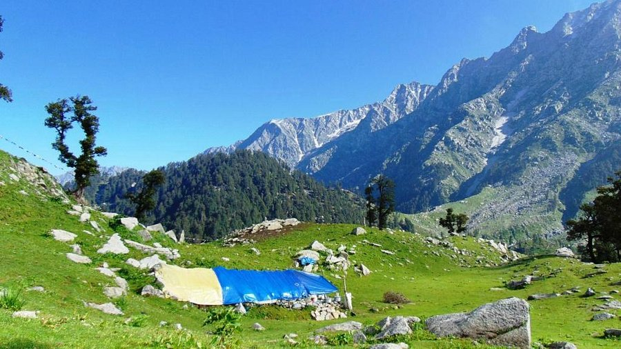

Triund Trek, Himachal Pradesh - Travel Blog

The Triund Trek near McLeod Ganj is a serene escape into the heart of the Himalayas.
Known for its scenic views of the Dhauladhar range and the Kangra Valley, it’s an ideal weekend trek for both beginners and seasoned adventurers.
Highlights:
- Panoramic views of the Dhauladhar Range
- Magic View Café midway stop
- Sunset and stargazing from the summit
- Lush rhododendron and oak forests
Quick Info:
- Start Point: McLeod Ganj/Dharamkot
- Distance: ~9 km (one way)
- Difficulty: Easy to Moderate
- Best Time to Visit: March–June & September–December
Back to Hikes